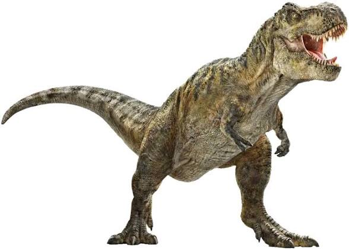
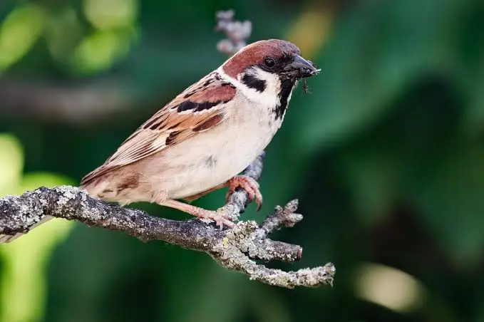
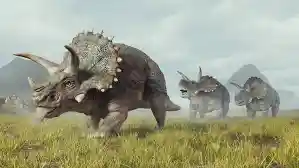
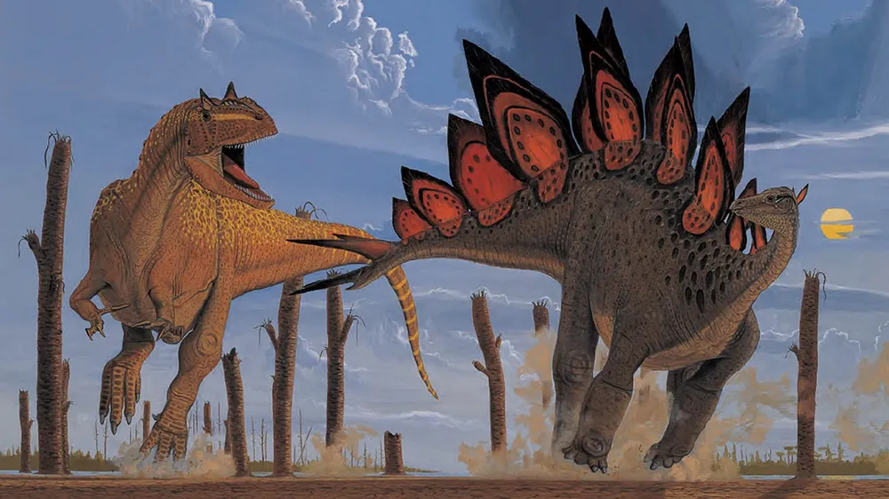

얘는 티라노, 용반목 수각류다

얘는 참새, 용반목 수각류다
대충 종속과목강문계 겹치는거 보면 알 수 있듯이 사촌관계로 보면 된다
그러니까 새는 공룡이 맞다
비약 있고, 항렬만 같은거고, 나이차가 6천5백만년일 뿐
그럼 공룡은 새일까?

얘는 트리케라톱스, 조반목 각룡류(하목)
티라노와 동시기, 동지역 서식 종이지만
목 수준에서 갈리는 먼 친척이다
티라노랑 친인척 관계 따지면 12촌도 아니고 사실상 옆단지 철수(잡아먹힘) 포지션

왼쪽 알로, 오른쪽 스테고
얘넨 아예 쥐라기에 살던 놈들
티라노 - 참새 사이의 시간 간격(7천만년)보다
티라노 - 알로 사이의 간격(8천만년)이 더 멀다
중생대는 상상이상으로 긴 지질학적 시간대였고
그 중생대의 지배자였던 공룡도 상상이상으로 넓게 퍼진 다양한 동물들이었다
그런 의미에서 공룡은 새다! 라고 외치는건 현대에서 고래보고 물고기라고 하는 것보다 훨씬 많이 바보같은 소리
심지어 분류학상으로 따지면 고래는 사지상강 포유류에 속하기 때문에 굳이 억지로 우겨넣자면 물고기에 속한 무언가로 넣을 수 있음
근데 공룡은 그게 안댐~
친척 맞는데?